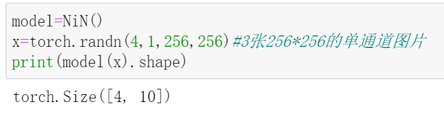
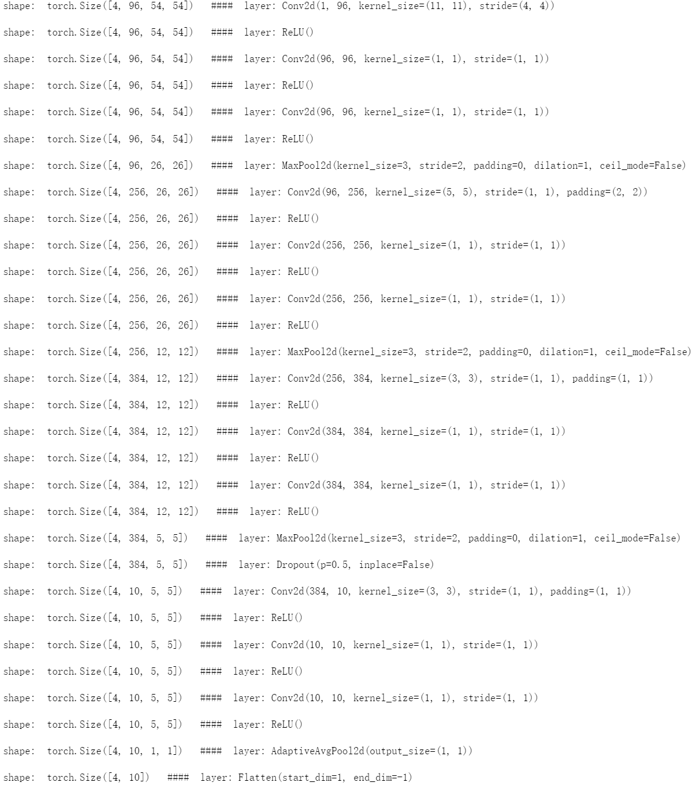

经典卷积架构:NiN
NiN
NiN在已有网络的基础上进行了改进，并且这些改进影响了后续网络模型的发展。经典之作，值得回味，今天我们就来一起实现它~
NiN的网络结构主要由多个NiN基础块堆叠而成。
1*1卷积
NiN基础块含有3个卷积层，除了第一个卷积层，其余两个卷积层的卷积核尺寸都是1*1的，这种卷积核不会改变特征图的尺寸，并且可以在不增加太多参数量的前提下，实现通道数的变化，相当于是将每个通道上的特征图做了一个融合(比如，卷之前，维度是[C,224*224]，卷之后，维度是[D,224*224]，看吧，只有通道数发生了变化)。
全局平均池化
在网络尾部进行分类结果输出时，NiN使用了全局平均池化层来代替之前的网络中使用的全连接层，这种提取全局信息的方式极大的减少了网络参数量，同时也不会像全连接层那样容易导致模型过拟合。你可以对比之前介绍的AlexNet，它在最后使用全连接层来输出分类结果，而这里的NiN使用的是全局平均池化。
NiN将网络最后一个NiN基础块的输出通道数设置为总类别数，紧接其后的全局平均池化层会在通道维度上对每张特征图求平均。假设总类别为10，那么就会有10个通道，经过全局平均池化层就能得到长度为10的向量，该向量中的每一个元素都是其对应通道上的特征图的平均像素值。
PyTorch 实现NiN
1 | import torch |
其中的nin_block方法定义了上面所说的NiN基础块，我们设置了分类问题的类别数为10。
这里使用了自适应平均池化层(AdaptiveAvgPool2d)来实现全局平均池化，只需将其输出特征图的尺寸设置为1*1即可.
现在，来测试一下：

输入4张图片，输出每张图片所属类别信息（这些信息包含在长度为10的向量中）。当然，通常会在最后加一个softmax层，以便将输出的向量所含信息转为类别概率分布。
和之前实现的网络一样，我们也可以查看每层的shape变化：
1 | all_layers=nn.ModuleList() |
输出：

参考：